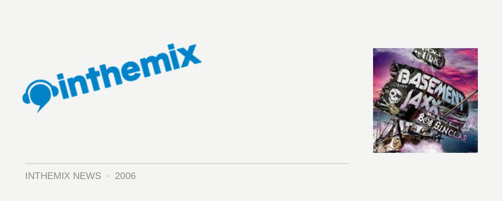

Shore Thing set times announced
For all those heading to Bondi Beach this NYE to catch a mammoth midnight live set from UK dance icons Basement Jaxx, set times have just been announced for the 2006 edition of Shore Thing to allow you to plan out your evening.
Fuzzy brought the Fatboy Slim ‘beach party’ experience to Bondi Beach last NYE in what turned out to be a massive sold out event. For months leading up to the announcement there was constant chattering and rumours as to how Fuzzy was going to top the 2005 event (with Daft Punk being one name that was often thrown around), but with Basement Jaxx flying in as headliners the party looks set to be every bit as big as last year. Basement Jaxx are one of the seminal live dance acts to emerge from the UK, along with the likes of the Chemical Brothers, Underworld and Groove Armada, and they’ll be supporting their new album Crazy Itch Radio.
Set times for Shore Thing are as follows:
8.30pm: GATES OPEN
9:00 – 10.30: Funktrust DJs
10.30 – 12: Lamanex (Toby Neal & Illya)
12 – 1.15: Basement Jaxx
1.15 – 3: Bob Sinclar